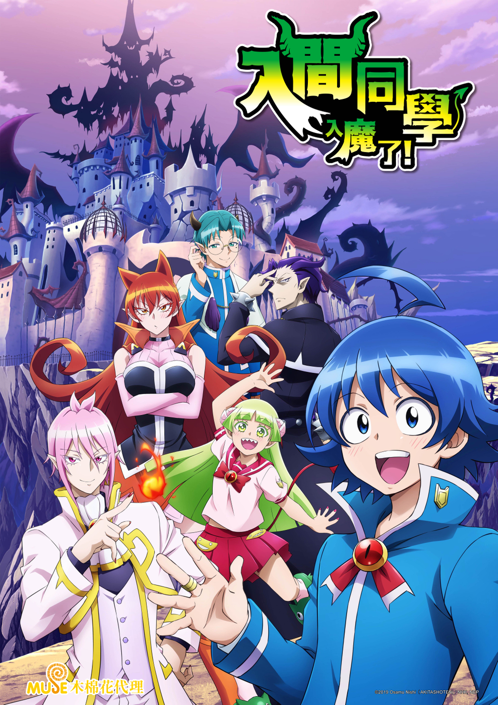

AnimeInterester
入間同學入魔了！第一季

故事簡介
歡迎來到充滿歡笑的魔界！！受人請託總是無法拒絕的爛好人少年．鈴木入間因為一段奇妙的機緣而成為了魔界的大惡魔．薩利班的孫子！備受溺愛的入間，進入了薩利班擔任理事長的惡魔學校就讀…。 儘管入間隱瞞自己的人類身份、希望能渡過一段和平的校園生活，但他不知為何總是備受注目。不但有惡魔菁英跑來找他打架、有珍獸系（？）女子喜歡接近他，甚至還被嚴格的學生會長給盯上了！
製作人員
原作：西修
導演：森脇真琴
系列構成：筆安一幸
腳本：井上美緒 / 大島のぞむ / 柿原優子 / 加藤還一 / 金杉弘子
角色設計：佐野聡彦 / 山本径子
美術監督：吉田ひとみ
色彩設計：高谷恵
攝影監督：千葉洋之
音樂：本間昭光
音響監督：郷田ほづみ
動畫製作人：關山晃弘
製作人：藤田裕介
制作・著作：NHK
聲優名單
鈴木入間：村瀬歩
阿斯莫德・艾利斯：木村良平
瓦拉克・庫菈菈：朝井彩加
阿薩謝爾・艾梅莉：早見沙織
那貝流斯・卡爾耶格：小野大輔
薩利班：黒田崇矢
歐佩菈：齋賀光希
斯伯諾克・薩布羅：佐藤拓也
安德洛・Ｍ・賈斯：柿原徹也
沙克斯・利德：山谷祥生
伊克斯・艾麗莎貝塔：本渡楓
凱伊姆・卡姆依：梶原岳人
阿格雷斯・皮克羅：吉永拓斗
蓋普・五右衛門：大河元気
安洛先・修奈達：土岐隼一
克羅凱爾・凱蘿莉：東山奈央
艾可：浅見春那
嘎子：森永千才
亞月：山本希望
小夏：舞原由佳
春乃：三谷綾子
德莎：井澤詩織
撒共・喬尼・威斯坦：江口拓也
巴迪恩・巴羅奇：八代拓
華盧布：石谷春貴
史特萊斯・蘇姬：新井里美
布耶鲁・布鲁谢格：中村大志
卡姆卡姆先生：下崎紘史
亞米·奇里歐：逢坂良太
旁白：鄉田穗積
各集標題
| 話數 | 標題 | 話數 | 標題 |
|---|---|---|---|
| 1 | 惡魔學校的入間同學 | 13 | 魔具研究師團/十三冠會 |
| 2 | 召喚使魔！ | 14 | 師團展覽會 |
| 3 | 入間與庫菈菈/惡魔的朋友 | 15 | 奇里歐的秘密房間 |
| 4 | 問題兒童班級 | 16 | 前夜祭 |
| 5 | 立志成為魔王的人 | 17 | 跑吧入間，奔向奇里歐身邊 |
| 6 | 艾梅莉的假設 | 18 | 發自內心渴望的事物 |
| 7 | 初戀回憶 | 19 | 想要守護一切/與家人共處的時間 |
| 8 | 迷上庫菈菈 | 20 | 光榮的頒獎/人類的待遇 |
| 9 | 入間的決心，激昂的努力 | 21 | 魔偶像克蘿姆！ |
| 10 | 激戰！處刑砲彈！！ | 22 | 亮晶晶的衝擊 |
| 11 | 和使魔在一起/師團的挑戰 | 23 | 入間同學和大家打成一片了 |
| 12 | 一年級爭奪戰 |